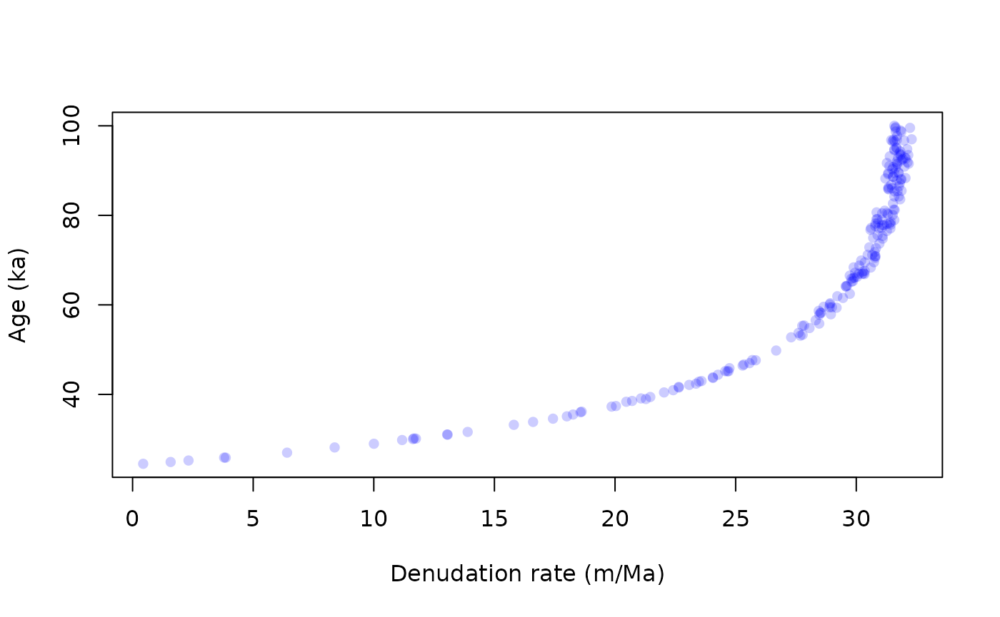
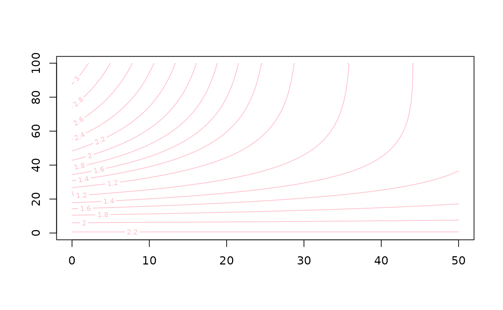

Depth profiles
Vincent Godard
2021-12-01
depth_profiles.RmdIntroduction
How to use this document?
This html page is derived from an R Markdown Notebook. You can copy/paste the various lines of code into your own R script and run it in any R session.
Setup
The first thing we have to do is to load the TCNtools library (once it has been installed)
library("TCNtools")We will need some parameters concerning production rates, attenuation length, etc …
Loading a dataset
The package TCNtools includes a selection of depth profiles data from the literature. We will use the profile from (???).
data("tcn_depth_profiles") # import the data set
data = tcn_depth_profiles[tcn_depth_profiles$study=="laloy2017bayesian",] # selecting a particular studyWe can then compute the scaling for this study site. Note that each site characteristics are only reported for the first sample (label=1).
altitude = data$altitude[1] # elevation in m
latitude = data$latitude[1] # latitude in degrees
P = atm_pressure(alt=altitude,model="stone2000") # compute atmospheric pressure at site
S = scaling_st(P,latitude) # compute the scaling parameters according to Stone (2000)We can plot the data.
plot(NA,xlim=range(data$C,50e3,200e3),ylim=rev(range(data$depth)),
xlab="10Be concentration (at/g)",ylab="Depth below surface (cm)")
grid()
arrows(data$C-data$C_e,data$depth,data$C+data$C_e,data$depth,length = 0)
points(data$C,data$depth,pch=21,cex=2,bg="pink")
text(data$C,data$depth,data$label,cex=0.7)Then we can compute a theoretical profile for a guess of the value for the parameters
rho = 1.7 # density (g/cm3)
ero = 40*100/1e6*rho # m/Ma -> g/cm2/a
age = 0.4e6 # a
C0 = 80e3 # inheritance (at/g)
z = seq(0,max(data$depth),length.out = 40)*rho # calculation depth (g/cm2)
C = solv_conc_eul(z,ero,age,C0,prm[,"Be10"],S,Lambda) # compute concentration´We now plot the results.
plot(NA,xlim=range(data$C,50e3,200e3),ylim=rev(range(data$depth)),
xlab="10Be concentration (at/g)",ylab="Depth below surface (cm)")
grid()
lines(C,z,lwd=3) # plotting the modelled profile
arrows(data$C-data$C_e,data$depth,data$C+data$C_e,data$depth,length = 0)
points(data$C,data$depth,pch=21,cex=2,bg="pink")
text(data$C,data$depth,data$label,cex=0.7)Exploring the parameters space
Preliminary exploration
We could change the parameters incrementally one by one to explore the effects on the modeled profile and attempt to converge toward a best-looking solution. It is obviously much more efficient and robust to do this automatically by going through a large number of parameters sets, compute the predicted concentrations (\(C_{mod}\)) and evaluate how well they match the observed concentrations (\(C_{obs}\) with uncertainty \(\sigma\)). We can use the \(\chi^2\) to quantify the difference between the model and observations.
\[\begin{equation} \chi^2 = \sum_{i=1}^n \left( \frac{C_{obs,i} - C_{mod,i} }{\sigma_i} \right)^2 \end{equation}\]
The function depth_profile_mc will allow us to generate a large number of models over the parameter space defined by :
- the age of the formation (
agein a) - the surface denudation rate (
eroin m/Ma) - the inherited concentration (
inhin at/g) - the density (
rhoin g/cm2)
There two additional parameters n1 and n2, which control how many models we are going to sample from this paramters space
-
n1is the number of model which are randomly drawn (Monte Carlo) -
n2is the number of regularly sampled points for each parameter (si if all 4 parameters are varying the number of models isn2\(^4\))
We can choose to carry out an exploration of the parameters space which completely random (n2=0) or following a regular grid (n1=0), or a combination of both.
This first attempt is a crude exploration of the parameter space.
res = depth_profile_mc(data$C,data$C_e,data$depth,prm[,"Be10"],Lambda,S,
age=c(0,100)*1000,
ero=c(0,50),
inh=c(0,1)*1e5,
rho=c(1.5,2.5),
n1=2000,n2=15)Note that in depth_profile_mc we could choose to fix a parameter by passing a single value as argument, instead of a two elements vector, which corresponds to the bounds of the explored interval.
We can have a look at the result table.
summary(res)## age ero inh rho
## Min. : 0 Min. : 0.00 Min. : 0 Min. :1.500
## 1st Qu.: 21429 1st Qu.:10.71 1st Qu.: 21429 1st Qu.:1.714
## Median : 50000 Median :25.00 Median : 50000 Median :2.000
## Mean : 50009 Mean :25.01 Mean : 50041 Mean :2.000
## 3rd Qu.: 78571 3rd Qu.:39.29 3rd Qu.: 78571 3rd Qu.:2.286
## Max. :100000 Max. :50.00 Max. :100000 Max. :2.500
## chi2
## Min. : 13.07
## 1st Qu.: 102.06
## Median : 331.64
## Mean : 495.47
## 3rd Qu.: 761.11
## Max. :2848.55Based on the \(\chi2\) value we can now try to have a look at a subset of our model, which correspond to the best fitting values for this metric. We can start to do that very coarsely by looking at a quantile, for example the best 1%.
cutoff = quantile(res$chi2,0.01)
best = res[res$chi2<cutoff,]
pairs(best[,-5],pch=16,col=adjustcolor("blue",0.2)) # we remove the last column (5) which correspond to the chi2 We see numerous tradeoffs between parameters, notably between age and denudation rate.
We see numerous tradeoffs between parameters, notably between age and denudation rate.
We can also select and plot the best model
imin = which.min(res$chi2) # position of the lowest chi2 in the dataframe
z = seq(0,max(data$depth),length.out = 40) # calculation depth (g/cm2)
C = solv_conc_eul(z*res$rho[imin],res$ero[imin]*100/1e6*res$rho[imin],res$age[imin],res$inh[imin],prm[,"Be10"],S,Lambda) # compute concentration
#
plot(NA,xlim=range(data$C,50e3,200e3),ylim=rev(range(data$depth)),
xlab="10Be concentration (at/g)",ylab="Depth below surface (cm)")
grid()
lines(C,z,lwd=3) # plotting the modeled profile
arrows(data$C-data$C_e,data$depth,data$C+data$C_e,data$depth,length = 0)
points(data$C,data$depth,pch=21,cex=2,bg="pink")
text(data$C,data$depth,data$label,cex=0.7)In many situation we have some knowledge about the value or plausible ranges of some parameters. For example the density can be measured at teh sampling site, and inheritance can be estimated from the shape of the profile, in our case it seems reasonable to consider that it is close to 90\(\times10^3\) at/g. We can restrict the range of variation or even fix these parameters, which what we do next, by letting only the age and denudation rate as free parameters. In this case the results will be much easier to visualize through the construction of a \(\chi^2\) surface.
res = depth_profile_mc(data$C,data$C_e,data$depth,prm[,"Be10"],Lambda,S,
age=c(0,100)*1000,
ero=c(0,50),
inh=90*1e3,
rho=2,
n1=20000,n2=20)
cutoff = quantile(res$chi2,0.01)
best = res[res$chi2<cutoff,]
plot(best$ero,best$age/1000,pch=16,col=adjustcolor("blue",0.2),
xlab="Denudation rate (m/Ma)",ylab="Age (ka)")
Alternatively we can represent the results as a continuous \(\chi^2\) surface. We use the library akimas to grid the results, note that .
library("akima")
spline<-interp(res$ero/max(res$ero),res$age/max(res$age),log10(res$chi2),duplicate="mean",nx=200,ny=200)
contour(spline$x*max(res$ero),spline$y*max(res$age)/1e3,spline$z,col="pink")